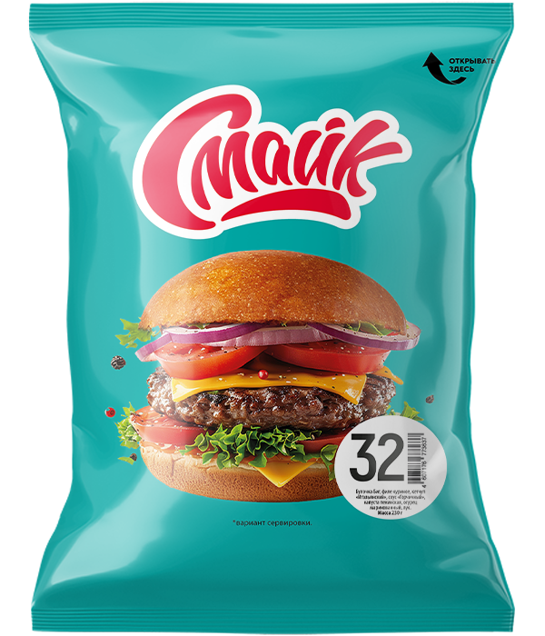

Бутерброд №32

Состав: булочка, филе куриное, кетчуп «Итальянский», соус «Горчичный», капуста пекинская, огурец маринованный, лук репчатый.
Масса нетто: 230 г.
Пищевая и энергетическая ценность в 100 г продукта (средние значения):
Белки – 10 г.
Жиры – 5,5 г.
Углеводы – 26 г.
Калорийность – 200 ккал / 840 кДж.